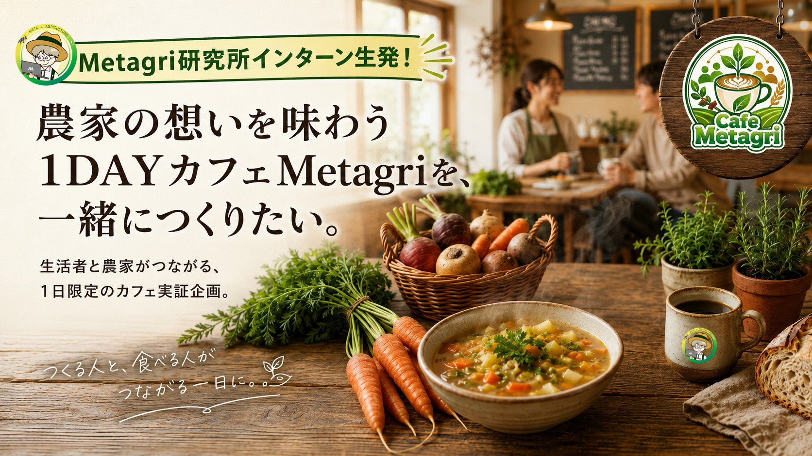
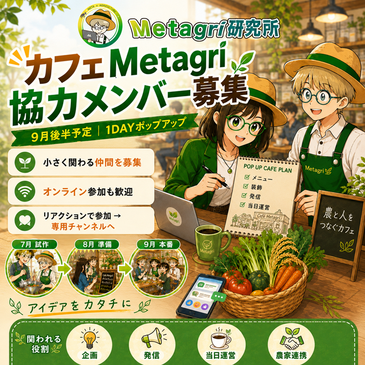
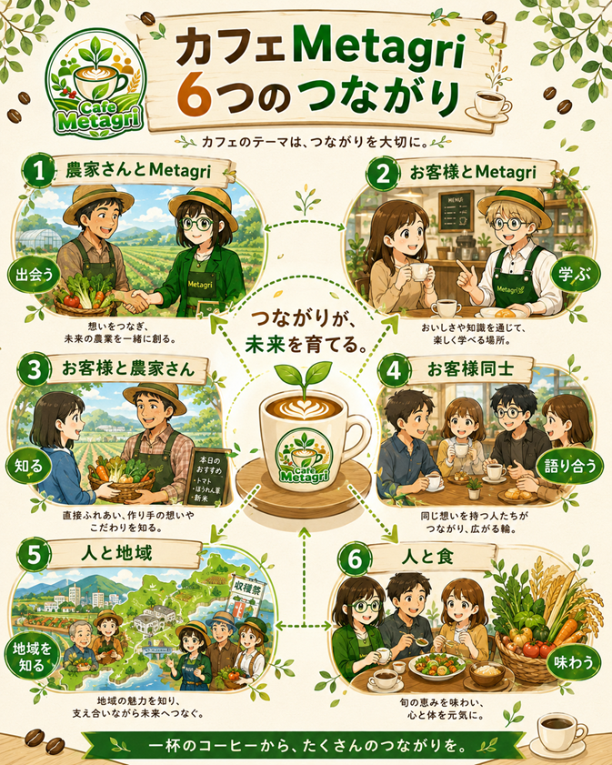
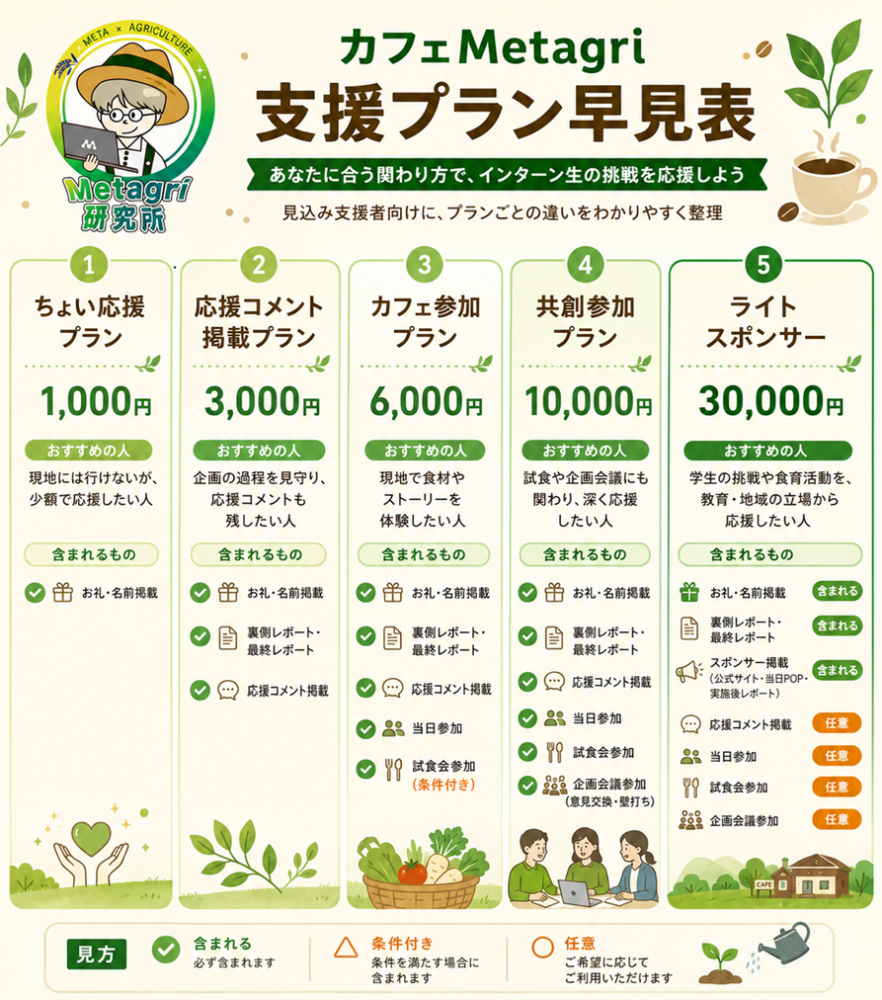

カフェが好きな方
コーヒーやフードペアリング、店員との会話、居心地のよい時間を楽しみたい方。
Metagri研究所インターン生発 / 2026年9月後半開催予定
Metagri研究所のインターン生発、1日限定のカフェ実証企画。農家さんの食材とストーリーを味わいながら、生活者と生産者がつながる場をゼロから育てます。完成したお店ではなく、未完成の企画を一緒に育てる共創者になってください。

支援状況は、入金確認ができた支援から順次反映します。
知る機会が、食の景色を変える。
カフェMetagriは、農業とテクノロジーのコミュニティ「Metagri研究所」で活動するインターン生から生まれた、1日限定のカフェ実証企画です。
農家さんの食材に込められた想いや、食材が手元に届くまでの背景を、スープやドリンク、ストーリーPOP、会話を通じて感じられる場をつくります。知らなければ、ただの野菜かもしれない。でも背景を知ると、食の景色は少し変わります。
カフェ単体の売上がゴールではありません。来場をきっかけに、次の行動につながる循環を検証します。

お客様・支援者起点の体験設計

カフェMetagriは、ただ飲食を提供する場ではなく、店員との会話、食材の背景、農家さんの想い、同じ関心を持つ人との出会いが残る1DAYカフェを目指します。
コーヒーやフードペアリング、店員との会話、居心地のよい時間を楽しみたい方。
カフェを開きたい、企画を形にしたいと思いながら、行動のきっかけを探している方。
野菜、フードロス、作り手の背景、サステナブルな活動を少し深く知りたい方。
休憩の合間や休日に、気軽な会話や近所付き合いのような温かさを求めている方。
投稿を見て気になり、カフェ体験や農家さんのストーリーに触れてみたい方。
オンラインのつながりを、リアルな対話や共創のきっかけへ広げたい方。
常設カフェではなく、支援者・共創者と一緒に育てる1日限定の小規模ポップアップ実証です。
| 目標金額 | 150,000円 |
|---|---|
| 募集方式 | All-in方式目標金額に届かなかった場合も企画を実施し、リターンをお届けします。 |
| 実施時期 | 2026年9月後半予定開催日は会場と安全面の確認が完了し次第、支援者の皆さまへ最初にご案内します。 |
| 開催場所 | 都内某所詳細な会場と集合時間は、確定次第このページと活動報告でご案内します。 |
| 形式 | 1DAYカフェ / 小規模ポップアップ常設カフェの開業ではなく、1日限定の実証企画です。 |
| 支援方法 | このサイトの支援申込フォームから受け付けます申込後にお送りする案内に沿ってお支払いいただき、入金確認をもって支援確定となります。 |
| 運営 | Metagri研究所 インターン生チーム食品衛生、会場契約、金銭管理、農家さんへの正式依頼は、Metagri研究所の運営側が責任を持って行います。 |
いただいた支援金は、単なる飲食代ではなく、農家さんと生活者をつなぐ実証企画への応援・参加費として活用します。内訳は目安であり、状況により多少前後します。
| 使途 | 目安 | 内容 |
|---|---|---|
| 農産物仕入れ費 | 30,000円 | 農家さんに無償提供を求めず、適正価格で食材を購入します。 |
| メニュー試作費 | 20,000円 | スープ、軽食、ドリンクの試作や試食会に活用します。 |
| 会場費・当日運営費 | 40,000円 | 1DAYカフェの会場利用、備品、消耗品、清掃、設備利用等に充てます。 |
| 広報制作費 | 20,000円 | POP、メニュー表、農家紹介カード、SNS素材等の制作に使います。 |
| 実施後レポート制作費 | 10,000円 | 支援者の皆さまへ届ける活動報告・成果レポートを作成します。 |
| インターン活動費 | 30,000円 | 企画、準備、発信、振り返りなどの活動を支える費用です。 |
支援者の皆さまを、単なるお客様とは考えていません。少額で応援する、準備の裏側を見守る、当日体験する、企画づくりに参加する、協賛として支える、農家として食材やストーリーの接点を広げる。6つのプランは、企画とのつながり方を自分に合う深さで選べる入口です。3,000円以上のプランには、カフェMetagriの公式サイトへの応援コメント掲載が含まれます。

提供時期: 2026年10月予定
現地には行けないけれど、インターン生の挑戦を少し応援したい方へ。
このプランで支援する提供時期: 2026年8月から10月予定 / 残り --
企画の裏側も楽しみながら応援したい方へ。
このプランで支援する提供時期: 2026年9月後半予定 / 残り --
この金額は飲食代ではなく、実証企画への参加費と応援費です。現地でカフェMetagriを体験したい方へ。
このプランで支援する提供時期: 2026年7月から10月予定 / 残り --
このプランは銀行振込での受付です。申込フォーム送信後、運営から振込先と期日をメールでご案内します。
若者の挑戦や、食と農の場づくりを一歩深く応援したい方へ。ご意見は大切に参考にしますが、最終判断は運営側で行います。
このプランで支援する提供時期: 2026年9月から10月予定 / 1名限定の申し込みは完了しました。
すでに農家さんからご支援をいただいている限定枠です。追加募集は行っていません。
農家さんの食材や想いを、カフェ体験の中で来場者に届けるための協賛枠です。広告効果や集客数を保証するものではありません。掲載名・掲載内容は事前に確認し、企画趣旨に沿う形で調整します。
提供時期: 2026年9月から10月予定 / 残り --
このプランは銀行振込での受付です。申込フォーム送信後、運営から振込先と期日をメールでご案内します。
学生の挑戦や食育活動を応援したい教育関係者、教員、地域の大人応援者向けの協賛枠です。広告効果や集客数を保証するものではありません。掲載名は事前に確認し、公序良俗や企画趣旨に合わない場合は掲載を相談・見送りとさせていただくことがあります。
このプランで支援するどのプランでも、支援は未完成の企画を一緒に育てる参加のかたちです。
このサイトから直接支援を受け付けます。プラットフォーム手数料がかからないぶん、支援金を企画にそのまま活かせます。
支援プランを選び、申込フォームからお名前・連絡先・希望プランを送信します。
運営からお支払い方法（振込先等）をメールでご案内します。
入金確認をもって支援確定です。このページの支援状況にも反映されます。
準備の裏側レポートは公式サイトの限定ページとDiscordで月2〜3回更新し、当日案内や各リターンは提供時期に沿ってお届けします。
本企画はAll-in方式です。目標金額に届かなかった場合も企画を実施し、リターンをお届けします。
天候、会場都合、運営上の安全判断により、内容が一部変更になる可能性があります。開催が中止・延期となった場合の対応（代替日程・返金等）は、確定次第すみやかに支援者の皆さまへご案内します。
詳細は販売規約をご確認ください。領収書が必要な方は、申込時にお知らせください。
運営について
Metagri研究所は、「農業の常識を超越する」を合言葉に、農業とAI・web3などの新しい仕組みづくりに挑戦しているコミュニティです。カフェMetagriは、そこで活動するインターン生の発案から始まりました。
メンバーそれぞれが、発信、メニュー考案、農家さんのストーリー整理、当日の体験設計、資金集めを手探りで進めています。最初から完成されたお店をつくるわけではありません。失敗や改善も含めて、農家さん・支援者の皆さん・コミュニティと一緒に育てていくプロジェクトです。
連携する農家さんとインターンメンバーの紹介は、確定次第このページと活動報告でお届けします。
はい。1,000円のちょい応援プラン、3,000円の応援コメント掲載プランは、現地参加が難しい方にもおすすめです。3,000円以上のプランでは、公式サイトの限定ページとDiscordで準備の裏側もご覧いただけます。
まず応援としてつながりたい方は1,000円、準備過程を見守りたい方は3,000円、当日体験でつながりたい方は6,000円、企画づくりから共創したい方は10,000円、協賛として支えたい方は30,000円がおすすめです。農家スポンサー枠は1名限定で、すでに申し込みが完了しています。
農家さんの食材購入、メニュー試作、会場・当日運営、広報制作、実施後レポート、インターン生の企画活動費に活用します。
開催は都内某所を予定しています。会場や時間は確定次第、支援者の皆さまへメール等でご案内します。
現地参加・試食会参加の方には、事前にアレルギー情報を確認します。安全に提供できない場合は、内容の一部変更や代替対応をご相談させていただくことがあります。
3,000円以上の支援者向けに、公式サイトのパスワード付き限定ページとMetagri研究所のDiscordで公開します。月2〜3回の更新を予定し、閲覧方法は支援後にご案内します。
掲載は希望者のみです。3,000円以上のプランで、カフェMetagriの公式サイトへの応援コメント掲載を選べます。
共創参加は、Metagri研究所のDiscordをメインに進めます。参加後は公式Discordに入り、農家さん・支援者・運営がつながる場として、企画会議や裏側レポートの閲覧、試食会の日程確認にご参加ください。
はい。公式Discordリンクからアカウント作成・参加ができます。参加後は案内に沿ってチャンネルを確認してください。操作に不安がある場合は、申込後の案内に返信してご相談ください。
企画会議は意見交換・壁打ちの場です。ご意見は参考にしますが、食品衛生、安全管理、運営上の理由から、最終判断は運営側で行います。
試食会は本番とは別日で実施予定です。カフェ参加プラン・共創参加プランには試食会参加券をオプションとして提供し、日程確定後にご案内します。希望者は無料で参加できますが、日程が合わない場合は不参加でも問題ありません。
共創参加プラン、農家スポンサー、ライトスポンサーは銀行振込での受付です。申込フォーム送信後、振込先と期日をメールでご案内します。農家スポンサーは1名限定で申し込み完了済みです。領収書が必要な方（スポンサー枠等）は申込時にお知らせください。
天候、会場都合、運営上の安全判断により内容が変更になる場合があります。中止・延期時の代替日程や返金等は、確定次第すみやかにご案内します。
カフェMetagriは、現在進行形のドキュメンタリーです。1日だけの売上ではなく、農家さん、生活者、支援者、Metagriがつながり続ける循環を一緒に育てる共創者をお待ちしています。